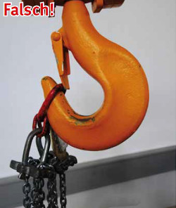
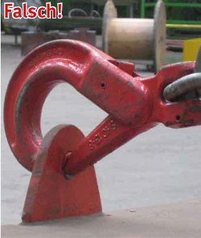
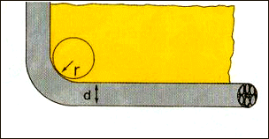
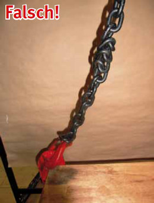

Die Aufhängeglieder müssen auf den Haken frei beweglich sein, sonst sind Reduziergehänge zu verwenden (Bild 22-1).
Ösen und Haken müssen zueinander passen.

Bild 22-1: Das Aufhängeglied ist für den Kranhaken zu klein. Es wird aufgeweitet und verbogen.

Bild 22-2: Haken ist in eine zu kleine Öse eingehängt. Haken und Öse werden verbogen. Außerdem besteht die Gefahr des unbeabsichtigten Aushängens.
Lasthaken sind so einzusetzen, dass ein unbeabsichtigtes Aushängen verhindert ist. Dies gilt nur dann nicht, wenn wegen besonderer Unfallgefahren beim Absetzen der Last, z. B. im Warmbetrieb, ein Aushängen ohne Mitwirken eines Anschlägers notwendig ist.
Zur Vermeidung von Schäden, welche die Anschlagmittel sofort unbrauchbar machen, dürfen Seile, Ketten, Hebebänder und Rundschlingen
Eine scharfe Kante liegt dann vor, wenn der Radius der Kante kleiner ist als der Durchmesser des Anschlagmittels. Bei Seilen ist deshalb in vielen Fällen Kantenschutz erforderlich (Bild 22-3).

Bild 22-3: Scharfe Kante, wenn der Kantenradius (r) kleiner als Durchmesser (d) des Seiles, der Kette oder der Dicke des Hebebandes ist.
Wenn man Ketten auswählt, die mindestens eine Nenndicke dicker sind als für die Tragfähigkeit erforderlich, sind sie quasi gepanzert: Verbiegungen der Kettenglieder sind nicht zu befürchten. Bei rauem Betrieb oder sehr scharfkantigem Gut sind zwei Nenndicken dicker noch besser geeignet und dauerhafter; bei der Gefahr des Anstoßens mit der Kette an der scharfen Kante an andere gelagerte scharfkantige Güter oder an Bauteile sollte die Mindestdicke 16 mm betragen.
Verdrehte Seile, Ketten oder Hebebänder sind vor der Belastung auszudrehen (Bild 22-4).
Falls Kettenverbindungsglieder im Kettenstrang vorhanden sind, dürfen sie beim Hebevorgang nicht an der Ecke liegen.

Bild 22-4: Stark verdrehte Kette. Beim Anheben der Last wird die Kette so beschädigt, dass sie nicht mehr weiter verwendet werden darf